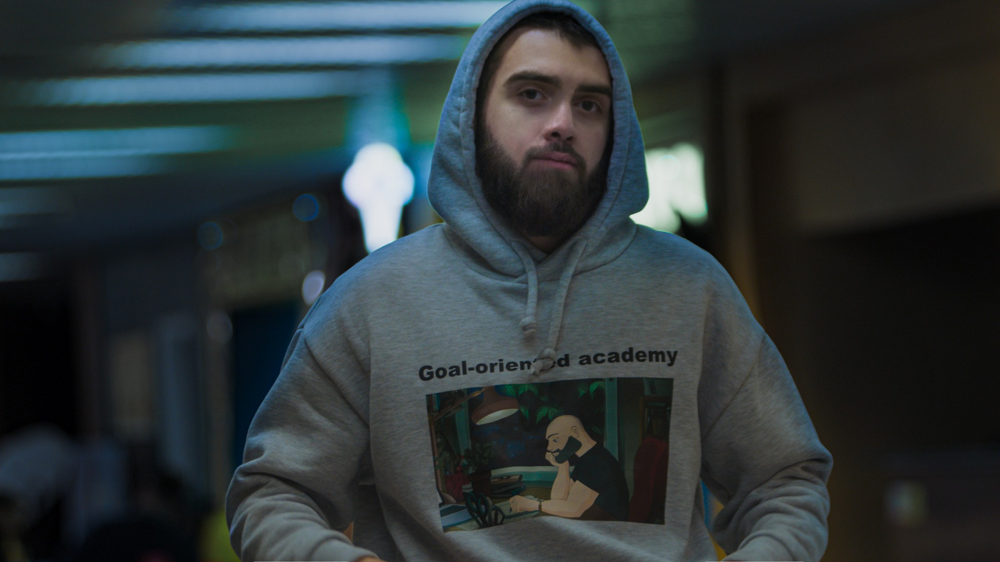
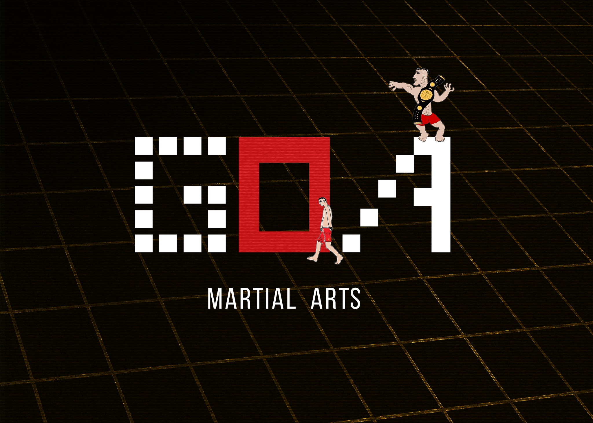
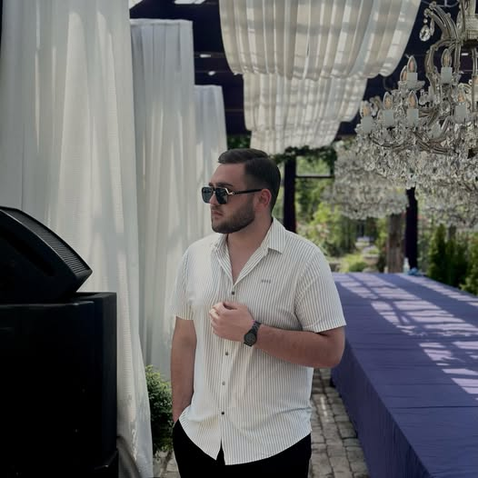

Goal-Oriented Academy • GOA (მიზნებზე ორიენტირებული აკადემია)
აკადემიაში სტუდენტები შეისწავლიან თანამედროვე ბიზნესისთვის მოთხოვნად ტექნოლოგიებს პროგრამირებას და ამ ყველაფრის პარალელურად ისინი გაძლიერდებიან პიროვნულადაც და გაიღვივებენ მრავალ soft-skill-ს საქართველოში ყველაზე სანდო და ერთადერთი აკადემია, რომელიც პერსონალურად მოგიდგება და დაგეხმარება ნებისმიერი ცხოვრებისეული პრობლემის მოგვარებაში. დაგისახავ დიად მიზნებს და ბოლომდე მოგეხმარები მათ მიღწევაში.
Nika Keshelava (ნიკა კეშელავა)

ეს არის ნიკა კეშელავა. განათლების ფსიქოლოგი, პროგრამირების და ლიდერობის მენტორი. GOA-ს დამფუძნებელი და დირექტორი.

ის ასევე არის Goal-Oriented Academy • GOA - Martial Arts დამფუძნებელი და მასწავლებელი
Goga Chalauri (გოგა ჩალაური)

ეს არის გოგა ჩალაური. ის მუშაობს Goal-Oriented Academy-ში. ის არის მენტორი,მოდერატორი,რაზმის ლიდერი,მინი მენტორი,ჩანაწერთ უხუცესი, Algorithms & AI student, ის ასწავლის პროგრამირებას მე-13ჯგუფს,40ჯგუფს,50ჯგუფს,57ჯგუფს და 76ჯგუფს
როგორია Goal-Oriented Academy-ში სწავლა.
გაკვეთილი არის 2 საათიანი, 45 წუთის შემდეგ გვაქვს შესვენება და ვაკეთებთ აზიდვებს.
aura(ქულა)
გაკვეთილზე დასწერება = +10
კამერის ჩართვა = +10
აზიდვები = +15
საკლასო დავალება = +15
კითხვებზე პასუხი = +15
ჰაკათონი
ლეპტოპის წამოღება აუცილებელია ( თუ გაქვთ ), ხოლო, თუ არ გაქვთ, არ იქნება ტრაგედია. რადგან თქვენ გადანაწილდებით გუნდებად და გუნდში რამდენიმეს ყოველთვის ექნება ლეპტოპი. მოსწავლემ თან აუცილებლად იქონიოს ჯანსაღი საკვები და მხოლოდ წყალი. დაუშვებელია junk food და შაქრიანი სასმელები(კოკაკოლა და ა.შ), GOA-ში ეს აკრძალულია. მხოლოდ დედიკოს კატლეტი და წყალი არის ნებადართული.დრესკოდი: ჰაკათონზე აუცილებლად უნდა გეცვათ კლასიკურად. შარვალ-კოსტუმი სასურველია. იხილეთ ფოტო ქვემოთ.გამარჯვებული გუნდი დაჯილდოვდება, როგორც ყოველთვის. ასევე გვექნება აჯიმანიების ჩემპიონატიც მონდომებულ მოსწავლეებს/მშობლებს ჩავუტარებთ ინტერვიუს და ჩავსვამთ ვიდეოში, რომელიც დაიდება ფეისბუქზე.